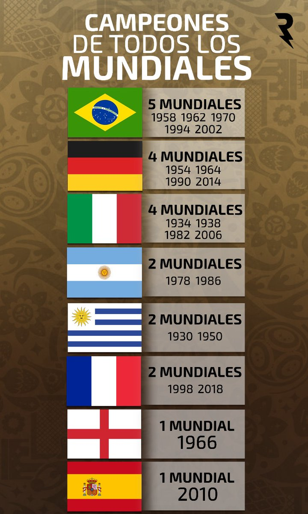

COPAS DEL MUNDO
QUE SON?
durante toda la historia del futbol se han llevado a cabo 21 copas del mundo,
un torneo disputado por el equipo de cada uno de los paises que clasifica.
Dicho torneo se lleva a cabo cada 4 años y siempre la fifa (organizadora de estos)
ellos eligen una sede o pais en donde se celebren estos
Estos campeonatos sirven especial mente para definir al mejor del mundo
como se llevara a cabo el proximo año en qatar que se llevara a cabo un mundial mas
por dicha razon no se han celebrado un grnade cantidad,
y debido a esto los campeones han sido:

alli se celebrará el mundial numero 22